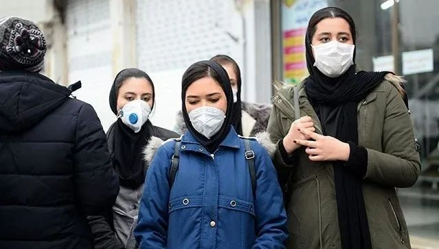
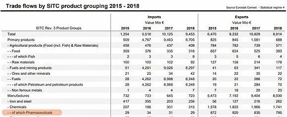

口述实录 | 109万只口罩，找遍世界寻货源，历经波折运回国
原文链接 备份链接 医护人员冲锋在一线有需要，我们国企和其他企业就要一起做好后勤保障工作，挑起企业抗击疫情的责任担当，相信众志成城、共克时艰不是一句空话，大家一起努力，疫情终将过去，一切都会好起来。 口述 | 周 道 整理 | 周 洁 小 …

图片来源：Twitter
记者：安晶
“
伊朗是伊拉克、叙利亚、阿富汗、阿塞拜疆、亚美尼亚等国民众的医疗旅游热门地。
”
累计确诊270例、接近10%的病死率，副总统、卫生部副部长等高官纷纷确诊感染……与其在中东政治中扮演的角色如出一辙，在此次新型冠状病毒肺炎疫情中，伊朗再次成为地区风暴眼。
伊朗对周边国家的影响力也不合时宜地从疫情扩散上体现出来：伊拉克、黎巴嫩、阿富汗、巴林、科威特的确诊病例都曾前往伊朗。
世界卫生组织在对突增病例国家表示担忧之时特别点名了伊朗。为协助伊朗控制疫情，世卫组织的一个小组将于周末前往伊朗。
然而，与周边国家相比，伊朗的医疗卫生系统可称得上“高配”：建立了分级医疗体系，初级卫生保健系统能覆盖95%的农村人口、被联合国儿童基金会评为“优秀”。连在伊朗寻求避难的部分阿富汗和伊拉克难民也能享受医疗保险。
在整个中东，伊朗也是热门的医疗旅游目的地。由于低廉的价格和较先进的医疗技术，仅去年3月到7月，就有约60万游客前往伊朗接受治疗或整容手术。
尽管如此，美国重启制裁对伊朗医疗系统的打击也是明显的。虽然伊朗国内使用的药品有97%均为本土生产，但其中三分之一的原料来自进口；大部分医疗设备则完全依赖进口。
面对汹涌的新冠疫情，伊朗医疗设备进口商联盟的官员坦言，美国的制裁已经影响了新冠病毒检测试剂盒的进口。德黑兰当地的华人告诉界面新闻，口罩和消毒液已经被抢购一空。
彭博新闻社定期会根据人口预期寿命、医疗服务的绝对成本、相对于平均收入的成本等指标，对各经济体的医疗服务效率进行排位。
在2018年的该项指数中，伊朗排第39位，人口预期寿命75.7岁。美国则因高昂的医疗费用排名第54位，列名单倒数第二。
非政府组织“核威胁倡议”、约翰霍普金斯大学健康安全中心和经济学人智库2019年发布了《全球卫生安全指数》，对195个国家的卫生安全能力进行排位。
在总分上，伊朗排名第97位，高于周边的伊拉克、叙利亚、阿塞拜疆、土库曼斯坦、阿富汗和巴基斯坦。而在“治疗病患和保护医疗工作者的充足稳健卫生系统”指标中，伊朗排名第62位，远高于平均分，甚至在南非、越南和卡塔尔之前。

红色为准备最弱国家，土黄色为准备较好国家，浅黄色为准备最好国家。
从1979年伊斯兰革命后，伊朗就开始搭建公共卫生系统，至今已经历了四次重大改革。
目前，伊朗的卫生事务由伊朗卫生和医疗教育部负责管理。在卫生和医疗教育部之上有两个跨部门委员会，一个负责跨部门合作和卫生事务决策，另一个负责制定医疗保险计划。

图片来源：截图
与很多国家不同的是，伊朗的医疗服务和教育均归卫生和医疗教育部管辖。每个省份至少设立一个医学院，医学院的院长也是当地的卫生官员，向卫生和医疗教育部汇报。目前伊朗的31个省里设有67所医学院。
在卫生和医疗教育部之下，各省医学院的董事会也就成为第二级管理层，医学院的医院则为大城市居民提供有针对性的医疗服务。
在医学院之下，为地区卫生网络。地区卫生网络负责管理地区卫生中心、地区公立医院、特别诊所等机构。地区卫生中心之下有农村医疗服务和城市医疗服务部门。
农村医疗服务的主要体现方式为医疗屋（Health House），也是农村地区患者首先就诊的地方。医疗屋一般配有常用药品、医疗设备、以及一男一女两名社区医务人员。这些社区医务人员也被称为Behvarzes，接受过两年专业培训，主要从事疫苗注射、妇幼保健、基本健康检查等工作。
到2019年，伊朗农村地区共设立了超过1.8万个医疗屋，驻有3.2万名社区医务人员，覆盖了95%的农村人口。遇到医疗屋无法处理的病患，工作人员会将其转至农村卫生中心，农村卫生中心无法处理则转入地区卫生中心。
城市中也设立了类似网络，包括医疗站（Health Post）和城市卫生中心。这一系统正是伊朗一直引以为傲的初级卫生保健系统，被称为“不可思议的杰作”。
该系统从1985年两伊战争期间开始设立。除了让农村居民享受免费基本医疗之外，也帮助伊朗大大降低了新生儿和孕妇死亡率。
伊朗约有8000万人口，目前有超过74%生活在城市地区。与农村相比，城市的初级卫生保健系统并没有取得很好的效果，患者逐级转院的机制并没有得到有效落实。但城市的医疗资源更为集中，大部分公立医院和几乎所有私立医院都位于城市地区。
伊朗的医疗机构主要分为三类：公立、私立和NGO。公立医院负责从初级到三级也就是医学院医院级别的医疗服务，私立机构主要负责城市地区的门诊医疗服务，NGO则针对儿童癌症、糖尿病等个别疾病提供专门服务。
国防部、石油部、伊斯兰革命卫队、提供社保服务的社会保障组织（SSO）等部门和机构还有自己的下属医院。到2018年，伊朗共有1117所医院、13万个床位、40万名医务人员。其中80%的床位都为公立医院所有。
在医疗保险上，直到1994年，伊朗有超过60%人口都没有任何医疗保险。但如今，不同职业背景的民众都有不同的医保系统。
独立运行的社会保障组织（SSO）是最常用的系统，主要分为养老金和医保两部分，目前伊朗有52%的人口从社会保障组织中受益。
社会保障组织的医保系统主要针对非政府部门雇员、自由职业者等就业人群及其家属，保费由雇员、雇主和政府共同分摊。参保人在社会保障组织下属的医疗机构就诊时享受免费医疗，其他医院和诊所为部分报销。最高时，公立医院的住院费能报销85%到90%。
政府工作人员和学生、军人及家属、农村居民则分别有不同的医保计划。2014年，总统鲁哈尼推出“鲁哈尼医保计划”以覆盖没有参加任何医保的居民。到2017年，该计划覆盖了近1100万人。
虽然覆盖面有所扩大，但伊朗的医保计划也因其繁复和政府投入不均遭到了诟病。
世界银行的数据显示，伊朗2016年的卫生总费用为360亿美元，占到当年GDP的8.1%。经济更发达的日本为10.93%、以色列为7.31%、沙特阿拉伯为5.74%，阿联酋仅为3.52%。
伊朗卫生总费用占GDP比重较高，尽管其中大部分为政府预算和医保资金，但自付费用（out-of-pocket）依然占到了35.5%。
在医学研究和创新领域，美国康奈尔大学、欧洲工商管理学院和世界知识产权组织发表的《2019年全球创新指数：创造健康生活——医学创新的未来》报告显示，伊朗在近130个经济体中排名第61位，高于沙特和卡塔尔。
从1979年开始，伊朗就采取了以仿制药为基础的国家药物政策。到2018年，伊朗国内使用的97%药品均为本土制造，医药市场价值约45亿美元。目前伊朗有186家本土制药公司和232家药品进口公司。
在购买药品时，高达92%的民众都使用医保购药。为控制药品价格，政府对多种药品生产和进口实施了补贴政策。到2017年，伊朗男性的预期寿命已经从1984年的67.7岁上升到75.47岁，女性则从71岁上升到79.36岁。
由于拥有更好的医疗条件和医疗技术，伊朗成为了伊拉克、叙利亚、阿富汗、阿塞拜疆、亚美尼亚等国民众的医疗旅游热门地。游客通常前往伊朗进行整容手术、心脏手术、骨科手术、不孕不育治疗等。
医疗旅游也随之成为了伊朗的新兴产业之一。目前伊朗有400多家医院在参与医疗旅游，其中170家获得许可专门建立了国际患者区。为方便其他国家的医疗游客前往，伊朗与周边13个国家签订了合作协议。除此之外，伊朗国内还设立了众多私人旅游公司，专门安排前往伊朗的医疗旅游。
美国重启制裁虽然给伊朗经济造成了重击，但同时也给伊朗的医疗旅游送去了更多商机。
正是因为制裁引发的伊朗里亚尔贬值，去年3月到7月的四个月里，伊朗吸引了60多万名医疗游客，与过去一年的医疗游客人数相当。
根据伊朗医疗旅游公司AriaMedTour的介绍，伊朗的骨科手术技术排名全球前十，而膝关节置换手术平均仅需2800美元。在南非，膝关节置换手术需花费1.3万到1.5万美元。
伊朗当局估算，每名医疗游客在伊朗花费3600到7600美元不等。2018年，医疗旅游业获得了12亿美元的收入。按照伊朗的第六个经济发展计划（2017-2022），政府计划每年能吸引50万到60万名医疗游客。
虽然有着该地区的顶配设置，但早在伊核协议达成之前，常年的国际制裁就已经对伊朗的医疗系统造成了打击。
2017年11月，伊朗议会成员向鲁哈尼致信，呼吁政府在10年内偿还应支付给主要医保机构社会保障组织的欠款。加上利息，预计政府需偿还超过360亿美元。
同年底，伊朗遭遇了两次大规模地震。地震之后，卫生和医疗教育部的一名官员在采访中指出，伊朗有70%的医院都修建于50年前，很多医院年久失修，急需定期维护。
在此次新冠疫情中确诊感染的伊朗卫生部副部长哈里奇（ Iraj Harirchi）也曾于去年8月在《柳叶刀》发文，指出在伊核协议签订前，伊朗已经有近600万名非传染性疾病患者因国际制裁而无法获得所需的治疗。
美国重启制裁后，伊朗的医药和医疗设备受到了更大冲击。
虽然伊朗有97%药品均为本土制造，但生产药品所需的原料药有三分之一依赖进口。治疗罕见疾病、慢性病、多种癌症、血液病等所需的基本药物完全依赖进口。
在医疗器械上，伊朗对进口的依赖更大。
根据伊朗国家医疗器械管理局的统计，2018年伊朗的医疗器械市场价值25亿美元，但只有30%的器械为本国制造，其余70%全部需要进口，包括核磁共振成像仪、扫描设备、骨科器材，甚至病床在内的基本设备。
在2018年5月美国正式宣布退出伊核协议前一个月，伊朗央行就开始做准备，为伊朗公司进口政府指定的必需品提供补贴汇率。当时公布的必需品清单中包括了5000多种药品和2.2万多种医疗器械。
虽然政府有所准备，但依然有很多药品和医疗器械不在补贴之列。以牙科为例，伊朗议会卫生委员会宣布，在伊朗使用的2000多种进口牙科产品和器械中，只有392种能享受补贴汇率。
一名德黑兰的私人牙医在接受人权观察组织采访时指出，他所开设的医院使用的很多医疗器械都不享受汇率补贴，而随着伊朗里亚尔贬值、进口设备的成本上涨，医院将无力添置新型设备，只能使用老旧设备。
虽然美国的制裁对基本药物和基本医疗设备等人道主义物资进行了豁免，但面对美国二级制裁的风险，众多国家的银行和金融机构都不愿与伊朗公司交易。
人权观察组织的报告中引用了一名英国律师的经历。这名律师指出，只要他的客户想与伊朗公司做生意，就算涉及到药品等人道主义物资，也需要做好打官司的准备。
在交易过程中，往往是银行拒绝转账。就算以起诉银行做威胁，银行最终转账，律师也需要先进入诉讼前程序。这一程序非常耗时，有时客户会干脆选择放弃与伊朗公司交易。
据欧盟委员会2019年公布的欧盟与伊朗贸易数据，2016年——也就是伊核协议达成后一年，欧盟对伊朗出口了价值9.2亿欧元的药品；到2018年，该数字下降至7.95亿欧元。

图片来源：截图
进口药品的减少除了让需要此类药品的病患更难以得到治疗，也导致了药品价格的上涨。
糖尿病患者萨德吉（Parviz Sadeghi）在本周接受法新社采访时描述了他在德黑兰购买胰岛素的艰难过程。
目前失业的萨德吉患糖尿病近10年。以前，他去任何药店都能买到胰岛素，但现在需要四处辗转，最后在一家药店排队数小时后才买到治疗必须的胰岛素。
据萨德吉介绍，三年前，胰岛素仅需约1.1美元，如今的价格已经翻了三倍。但虽然失业，萨德吉购买胰岛素的花销依然由医保全额支付。
德黑兰当地华人阿华接受界面新闻采访时表示，平时看病时已经能感受到医疗机构的捉襟见肘。据阿华就医的体会，很多专业药品当地无法生产，从而导致所需药品不够；同时医院的设备老旧，有些专业设备甚至没有。
随着新冠疫情的爆发，制裁对伊朗医疗设备的影响也被进一步放大。雪上加霜的是，2月21日，国际反洗钱金融行动特别工作组将伊朗列入了黑名单。列入黑名单后，与伊朗的所有交易都将面临更严格的审查。
伊朗医疗设备进口商联盟副主席法拉（Ramin Fallah）24日接受伊朗媒体采访时抱怨，美国的制裁以及黑名单事件已经影响到新冠病毒检测试剂盒的进口。
法拉透露，已经有多家外国公司准备将试剂盒运至伊朗，但因外国银行拒绝与伊朗公司交易，伊朗无法进行银行转账。
目前只有世卫组织绕开制裁，向伊朗运送了四船检测设备和医务人员防护设备。中国则向伊朗捐赠了25万个口罩和5000人份核酸检测试剂盒。
法拉还指出，在应对新冠疫情中最重要的医疗设备是ICU设备和呼吸机。他并未透露伊朗现有的ICU设备数量，仅表示呼吸机数量尚“充足”。
为应对疫情做准备，他本人将前往土耳其“人肉代购”，用现金购买200万个医用口罩，再从土耳其运回伊朗。
除了制裁对硬件造成的影响之外，伊朗虽然拥有完整的医疗系统和较好的医疗技术，但其传染病监控系统依然存在诸多问题。
和很多国家一样，伊朗也设立了传染病防控部门：隶属于卫生和医疗教育部的传染病控制中心（CCDC）。
但传染病控制中心的Abbas Norouzinejad联合多名伊朗学者于2019年7月在《伊朗医学》杂志上发表的文章指出，伊朗的传染病防控系统存在很多问题，包括发现疾病后没有及时上报、医务人员对传染性疾病了解不足、发现疾病后干预不得力等。
文章指出，上报是最突出的问题之一，很多私人医疗机构的医生在发现传染性疾病后不对监管机构上报。不上报一方面是因为缺乏激励机制，另一方面则是因为很多私人医疗机构并不了解上报系统。
而在政府设立的初级卫生保健网络中，部分城市和农村卫生中心依然使用人工手动登记。在接受调查的60所城市和农村卫生中心里，用电脑记录收集处理数据的只有25%。
在干预措施上，由于医院为应急突发公共卫生事件预留的床位数量有限、部分一线医院缺乏专门医生、财政问题等，可进行干预的硬件条件不理想，跨部门的支持和协调也不到位。
面对有限的硬件软件条件，伊朗政府在应对新冠疫情时，一方面表示疫情不可能比流感更危险，另一方面则采取有保留的措施，包括关闭多地的学校、教育机构、电影院和展览馆，对多地公共交通消毒。
对于伊朗最初惊人的确诊病人死亡率，很多西方医学人士都推测，主要是因为症状较轻的病患没有被检测出来。一方面可能因为检测手段不足、上报不及时，还有可能是因为医疗设备老化失准。由于轻症患者没被及时检测，实际感染人数应远高于目前公布的人数。
据阿华介绍，德黑兰当地民众对疫情有不同反应，街头上戴和不戴口罩的人都有。有人不戴口罩继续聚会，也有人开始往其他国家跑。
但与疫情刚爆出时相比，这几天民众的重视度明显提高，消毒液和口罩已经被抢购一空。德黑兰各清真寺的宗教活动宣布取消，部分社区已经开始给高危人群免费发放口罩，“我自己还没收到，但楼下卖菜的收到了”。

军方工厂生产口罩。图片来源：Twitter
上周六，伊朗卫生和医疗教育部宣布将向政府医疗机构免费发放口罩和消毒液。在疫情爆发点什叶派圣城库姆，当局将挨家挨户发放口罩和消毒液。
卫生和医疗教育部要求全国所有口罩生产商将每日生产口罩的至少50%上交给卫生部，以换取现金。
伊朗工业、矿业和贸易部部长拉哈玛尼（Reza Rahmani）宣布，全国13家主要口罩厂商将24小时开工，每天能生产约200万只口罩。
伊朗纳米技术总部则于26日与卫生部和两家企业签订协议，生产1500万只N94和N99纳米口罩。国防部的下属组织也开始进行口罩和消毒液生产，伊斯兰革命卫队的所有医疗机构将参与疫情防控。与此同时，伊朗政府还要求伊朗央行准备外汇以用于优先进口口罩。
虽然采取了一系列应对措施，伊朗的确诊人数依然在急剧攀升。鲁哈尼已经表示，政府没有计划进行封城或者封镇。对于遭受制裁和被列入黑名单的伊朗而言，类似封城的大动作无疑将给经济带来更大打击。
阿华担忧，虽然政府对确诊病人设立了指定医院进行定点医治，但医院并没有足够的床位。根据伊朗卫生部2017年的数据，每1000人口的床位数量仅为1.72张。
作为自我防护，阿华准备最近几周尽量待在家里，“社区小卖部就能解决生活需要”。
（应被采访者要求，阿华为化名。）
未经授权 禁止转载

原文链接 备份链接 医护人员冲锋在一线有需要，我们国企和其他企业就要一起做好后勤保障工作，挑起企业抗击疫情的责任担当，相信众志成城、共克时艰不是一句空话，大家一起努力，疫情终将过去，一切都会好起来。 口述 | 周 道 整理 | 周 洁 小 …
原文链接 备份链接 医院人员领取志愿者送的医疗物资。受访者供图 文 | 李晓芳 编辑 | 胡大旗 新型冠状病毒肺炎疫情扩大后，湖北省内的医院医疗物资告急。从1月23日开始，很多医院自行发布物资募捐公告。几乎同一时间，各种民间力量行动起来， …
原文链接 备份链接 新京报记者了解到，除了口罩之外，消毒液、护目镜、体温计等防护产品也出现了大量空缺。成都中光洗消剂有限公司总经理马灵告诉新京报记者，疫情发生之后，公司就开始加班加点生产消毒液。 全文2455字，阅读约需5分钟 1月28 …
原文链接 备份链接 我一度后悔自己离开了医生这个职业，他们那么缺人，我却不能跟他们一起冲上去。难过、绝望、内疚…… 口述 | 冯 翔**** 整理 | 陈 冰 …… 冬天腊梅花， 夏天石榴花， 晴天都是人， 雨天都是伢。 过路的看风景， …
原文链接 备份链接 7610 来源：正和岛 作者：叶青 02-28 1、数字 27日，农历二月初五。阴冷。小雨。27日，全国新增确诊病例327例，新增死亡病例44例（湖北41例，北京2例，新疆生产建设兵团1例），新增疑似病例452例。截 …